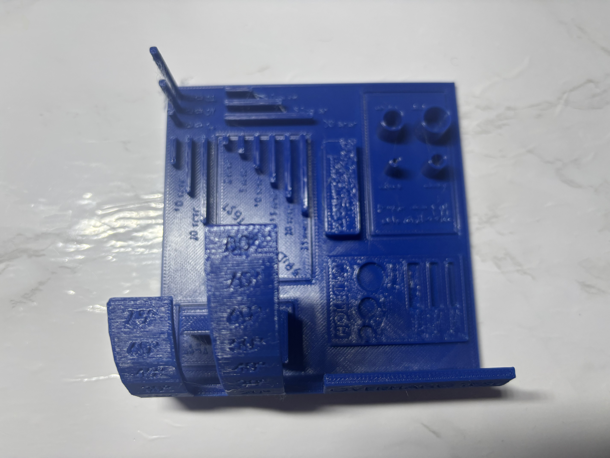
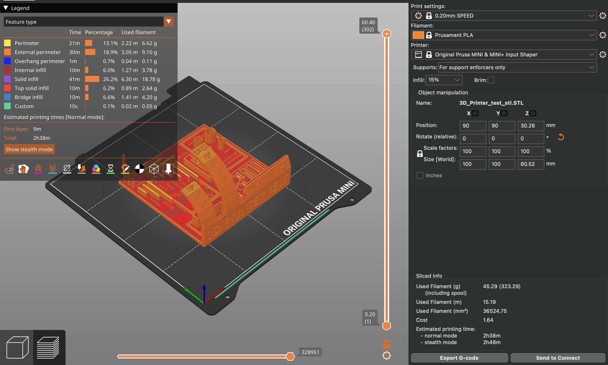
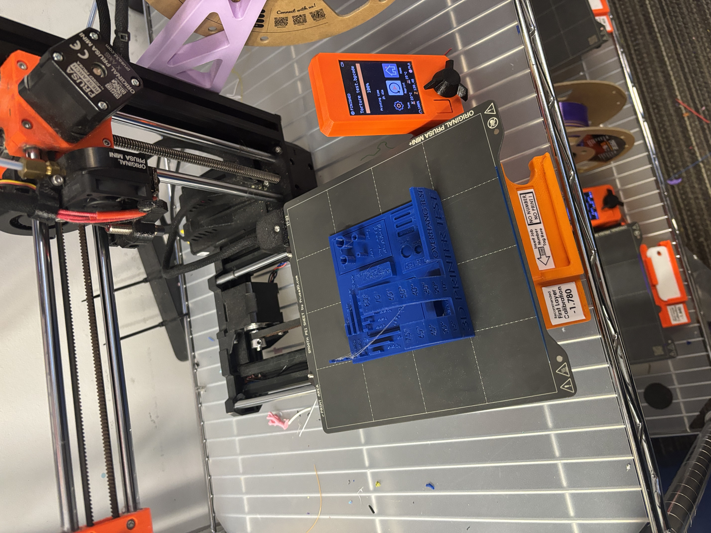

All-in-One 3D Printer Torture Test

nmjnA torture test in 3D printing is a specially designed model that intentionally pushes a printer to its limits in order to evaluate its performance across multiple features at once. These tests are used to assess capabilities such as overhang handling, bridging, text clarity, retraction, layer adhesion, and dimensional accuracy. For this print, I chose an all-in-one 3D printer torture test, which combines a variety of challenging elements into a single model. This specific test evaluates how well the printer manages overhangs at increasing angles, and prints out small details. Using this type of model highlights the importance of thoughtful file design and file format choice. In particular, the difference between 3MF and STL files becomes clear during this process. STL files store only the surface geometry of a model, which makes editing more complex for example, changing text often requires recreating it in a separate CAD program. In contrast, 3MF files retain additional information such as scale, units, materials, and print settings, making them easier to modify and better suited for preserving design intent.

My personal torture test print revealed both the strengths and limitations of the Prusa MINI+. One clear strength was its ability to handle overhangs from 10 to 80 degrees, demonstrating that the printer can manage moderate to steep angles without the need for supports. However, the print also exposed several limitations. There was noticeable stringing throughout the model, suggesting limits in retraction tuning and movement control. While larger text printed cleanly and was easy to read, smaller interior text suffered from poor precision, with some letters incomplete or smeared together, making them difficult or impossible to read (as seen in Figure 2) . Additionally, small gaps appeared in the bottom layers at higher angles, particularly around 70 and 80 degrees, indicating reduced layer adhesion and surface quality at steeper slopes. Overall, the torture test demonstrated that the Prusa MINI+ performs well when printing moderate overhangs and larger features, making it a strong option for functional parts and designs without extremely fine details. However, it is less well suited for prints that rely on very small text or high precision, as issues such as stringing and reduced detail clarity become more noticeable.

Figure 3: Settings in PrusaSlicer

Figure 4: In progress picture